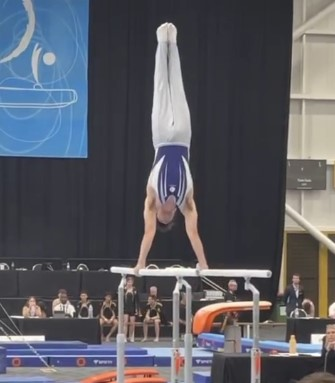
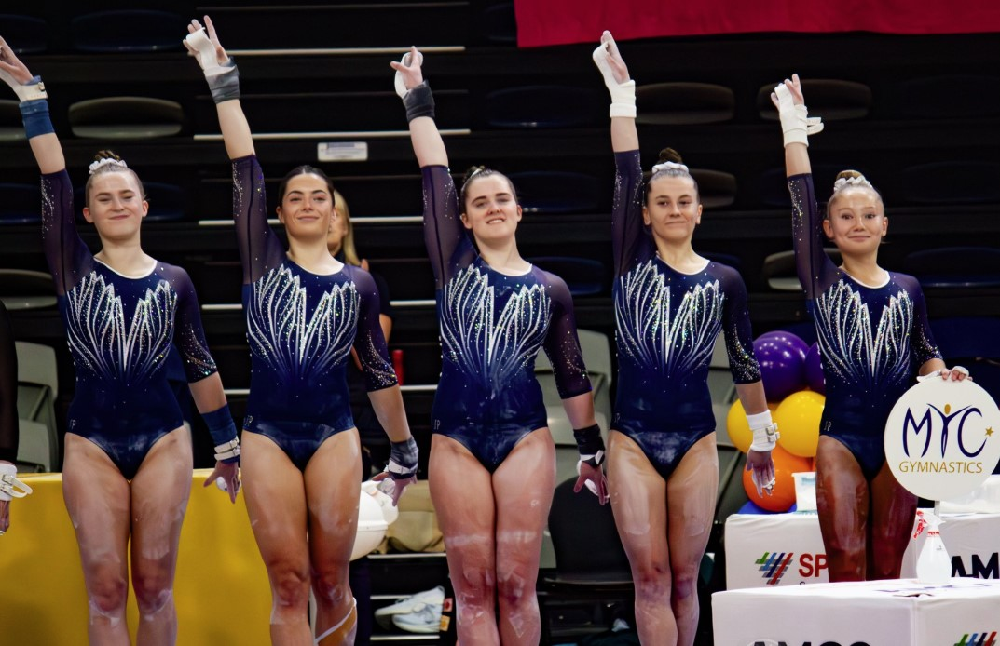

In our last profile on BTYC, we noted in passing that "MYC leads the state" in MAG all-around medals at Level 8 and above. It was a single sentence, a benchmark to set BTYC's position in context, but it pointed to a club worth looking at more closely. MYC Gymnastics is based in Mornington, on the Mornington Peninsula, roughly an hour's drive south-east of Melbourne's CBD, a club with 70 years of history and, as it turns out, more MAG all-around medals at Level 8 and above than anyone else in Victoria.
MYC's history runs back to 1954, when what is now a gymnastics club started life as a multi-sport organisation on the Peninsula. Gymnastics eventually became the sole focus, and in 2014 the club moved to its current home at the Civic Reserve Recreation Centre and rebranded. Their about page has the full story of how it came together, including a 70-year milestone they marked in 2024.
The MAG programme
The headline number from the MAG programme is 90: 30 gold, 30 silver, and 30 bronze in all-around events at Level 8 and above, across our three seasons of data. That is more than any other Victorian club in our database. BTYC, who we profiled last week, has accumulated 71 at that same threshold and sits clearly second. The rest of the field falls away from there. A total of 90 AA medals at the elite levels is not the product of one or two standout athletes in a good year; it reflects consistent depth across the programme over time.
The individuals behind that number are not household names in the broader gymnastics conversation, but they are performing at a level that holds up in context. Jordan Liang has been MYC's top Level 8 performer in our database, posting 71.8 at the Senior Victorian Championships, the highest L8 all-around score we have for the club. Bailey Gonsal has also competed at a high level across multiple seasons at L8 and L9. At Level 10, Harrison Higgins has been the club's most consistent senior performer, with a best of 70.4 and results in the 65–70 range across multiple competitions. Cameron England has also been competing at Level 10, scoring 68.0 at the Senior Vics, though he suffered a ruptured Achilles tendon during the 2026 championships.

One detail that stood out from the 2026 Senior Victorian Championships: Bailey Gonsal won gold on pommel horse five weeks after breaking a finger. He also placed on the podium on floor and vault at the same competition.
The wider programme has genuine depth beyond the top names. Across 45 MAG athletes in our database, MYC has had gymnasts competing from Level 1 through Level 10, with Level 7 their largest cohort at 130 results. Their team event record reflects that depth: 11 gold, 5 silver, and 6 bronze in team competitions across our data. The club also hosts its own invitational, the MYC MAG Senior Invitational, held in March. MAG Program Manager Ben Pocklington was nominated for Gymnastics Victoria's Outstanding Contribution to MAG award this year.
The WAG programme
The clearest recognition of the WAG programme's coaching quality came at Gymnastics Victoria's annual awards. The MYC Level 7 WAG coaching team, Ella Code, Taya Gott, Olivia Whitehead, and Micayla Riley, won the Competitive Coaching Team of the Year award. The Level 7 results show why: MYC has 225 WAG competition results at Level 7 in our database, their biggest single-level cohort. Level 7 is currently where the club's depth is most visible in the numbers.
At the elite end of the WAG programme, MYC has been consistent across the Level 10 field. Natalie Groves posted 48.132 at the 2026 Senior Victorian Championships, finishing 8th in the state, building on a 47.815 at Trial 1 and a 47.7 at the Waverley Invite earlier in the season. Olivia Trembath has been at a similar level: 48.1 at the Waverley Invite, 47.998 at the Senior Vics, 47.766 at Trial 1. Two Level 10 athletes consistently scoring in the 47–48 range gives the programme a reliable presence at the top of the domestic field. Catherine Trembath, also at Level 10, has posted a best of 46.35. Addison Tucker, who has competed at both Level 8 and Level 10, posted 49.25 at L8 at the Senior Vics, the highest L8 WAG all-around in our MYC data.
The 2026 season saw MYC athletes named across multiple squads. Macie Johnson and Chloe Chinnery earned spots in the Level 9 State Team, Tiffany Clarke was selected for the Level 8 Border Challenge White squad, and Karyna Hanieva for the Level 7 Border Challenge. At Level 10, Natalie Groves, Olivia Trembath, Addison Tucker, and Ebony Gough all qualified for the National Squad, with final selection pending the Team Training Camp.

Two Level 10 athletes consistently scoring in the 47–48 range gives the programme a reliable presence at the top of the domestic field.
Two coaches, Sasha and Olivia, gained their FIG Level 3 accreditation at the Australian Institute of Sport in Canberra in January 2026. FIG Level 3 is a high standard of international coaching qualification, and having two coaches reach it in the same cohort is a measure of the club's investment in coaching development.